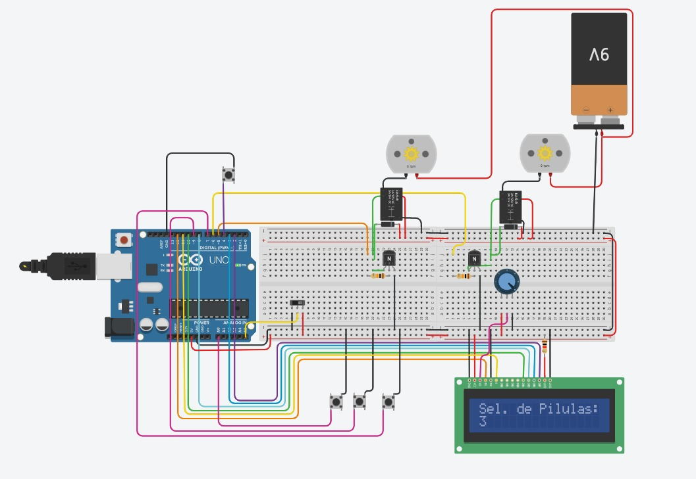

João Vitor
Engenharia de Biomédica
O cuidado domiciliar (home care) é um modelo de cuidar com a finalidade de evitar o aumento a demanda da rede pública de saúde. O trabalho deve ser realizado por uma equipe multiprofissional composto por médicos, enfermeiros, fisioterapeutas, terapeuta operacional e etc., como conhecimento crítico e científico para promover qualidade de vida.
Além disso, a praticidade do home care é aplicação e administração de medicamentos que o tratamento de determinadas patologias ocorre por terapia medicamentosa e o serviço é benéfico para idosos e pessoas que são incapazes em coordenar as medicações, ou familiares que não tem prática no procedimento. O uso de medicamentos tem sido uma parte crucial na recuperação do paciente e sua aplicação deve ser realizada por um profissional capacitado, porém muitas vezes o profissional capacitado pode errar na dosagem do medicamento levando o risco de morte do paciente ou ter efeitos colaterais que podem piorar o quadro paciente.
A envasadora de pilulas tem a finalidade de colaborar com o profissional de saúde na organização e condução do tipo e quantidades dos medicamentos que estão sendo utilizados no atual momento. Dessa maneira, o projeto tem o objetivo de separar, contar e armazenar corretamente as pilulas de um modo mais rápido e eficiente. Pode-se classificar o funcionamento da seguinte forma:
1. Recebe as pílulas por um compartimento na parte superior da envasadora.
2. Separa as pílulas atrás de um disco cônico que faz movimento circular onde força as pílulas para as bordas do disco.
3. Faz o alinhamento dos comprimidos através de uma peça de ajust manual para o tamanho dos comprimidos.
4. Encaminha os medicamentos para a esteira, que depois os encaminha ao contador.
5. Dispensa as pílulas contadas por um tubo em direção aos potes.
6. Ao preencher o númeor estabelecido pelo usuário de pílulas, o sistema fazer três processos: Zerar a contagem de pílulas no sensor, parar esteira cônica e girar a esteira dos potes.
| Componentes | Função |
|---|---|
| Proto Prata | comportar os componentes que formam o circuito. |
| Motor DC 130 3-6V | Movimentar plataformas em esteira circular para movimentar as pílulas e trocar os potes. |
| Relé de Potência 15A 24VDC | Aciona os motores |
| Bateria 9V | Energizar os relés e os motores DC |
| PowerBank | Energizar o Arduino DC |
| Transistore NPN(BJT) | Chavear o comando do arduino para o relé |
| Push Button | Controle do display |
| Display LCD 16x2 | Mostrar dados de saída e controle de quantidade. |
| Potenciômetro | Controla o brilho da tela |
| Diodos | Controle de corrente |
| Resistores 10k ohms | Controle de tensão nos transistores |
| Resistor de 220 ohms | Controle de tensão no display |
| Kit de Jumpers | Serve para ligações |
| Módulo Sensor Magnético Reed Switch | Ler a esteira circular dos potes |
| Kit de Imas | Gerar campo magnético para ser lido no Reed Switch |
O usuário coloca os potes vazios na esteira circular e liga a máquina com o interruptor na lateral da máquina. O display acende na tela de seleção de quantas pílulas se deseja em cada pote.
Além disso, é visualizado os botões no display onde são 3 botões nas laterais sendo classificado por seleção e meio para o controle, assim pode dar as funções como parar a máquina ou voltar para o menu de seleção. O botão de seleção na direita serve para subir o número de pílulas para 15 e confirma como o apertar do botão do meio.
A esteira circular cônica começa a girar e o usuário ajusta o separador mecânico e coloca as pílulas pela escotilha superior da máquina. Dessa maneira, as pílulas caem na máquina para que comecem a ser separadas pela esteira cônica e passem para o corredor onde elas passam pelo sensor e vão sendo contadas, depois caem no pote vazio enquanto no display é mostrado o número de pílulas que já passaram pelo sensor. Depois que o primeiro atingir o número máximo, sendo 15 pílulas. A esteira cônica deve parar e a esteira circular dos potes deve ser mover para o próximo pote vazio e o usuário retira o primeiro pote preenchido para conferir o resultado.